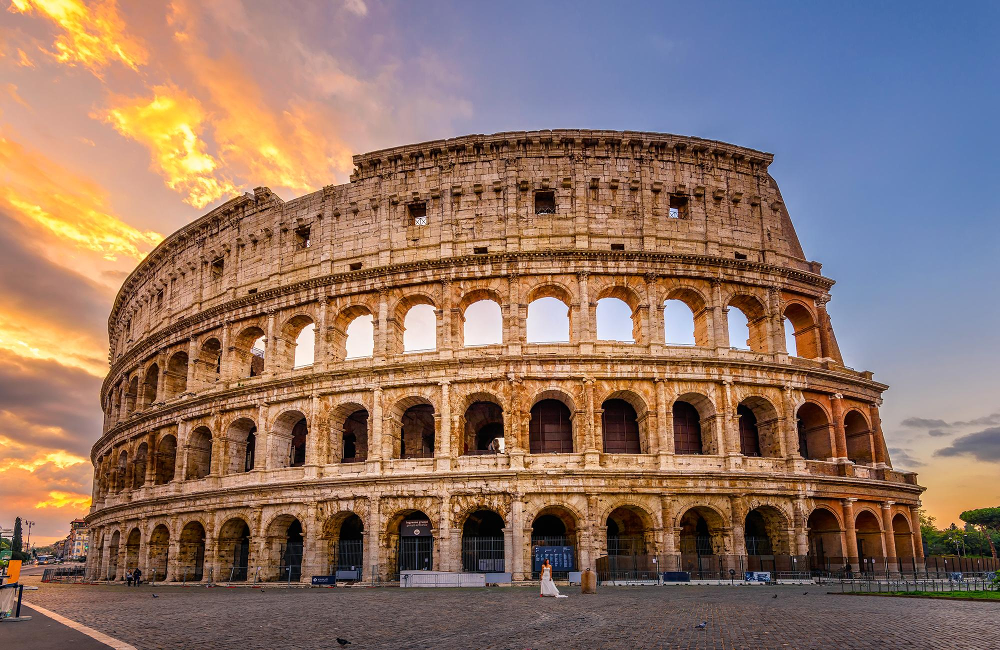

My Favorite Travel Spots
← Back to Homepage
Kyoto

Kyoto is the cultural heart of Japan, famous for its classical Buddhist temples, gardens, imperial palaces, and traditional wooden houses.
- Province/State: Kyoto Prefecture
- Country: Japan
- Population: 1.46 Million
- Latitude & Longitude: 35.0116° N, 135.7681° E
- Flag:

Paris

Paris, France's capital, is a major European city and a global center for art, fashion, gastronomy, and centuries-old culture.
- Province/State: Île-de-France
- Country: France
- Population: 2.14 Million
- Latitude & Longitude: 48.8566° N, 2.3522° E
- Flag:

Madrid

Madrid, Spain's central capital, is a city of elegant boulevards and expansive, manicured parks like the Buen Retiro. It’s renowned for rich repositories of European art.
- Province/State: Community of Madrid
- Country: Spain
- Population: 3.3 Million
- Latitude & Longitude: 40.4167° N, 3.7038° W
- Flag:

Rome

Rome, Italy's capital, is a sprawling, cosmopolitan city with nearly 3,000 years of globally influential art, architecture, and history on display.
- Province/State: Lazio
- Country: Italy
- Population: 2.87 Million
- Latitude & Longitude: 41.9028° N, 12.4964° E
- Flag:

New York

New York City comprises 5 boroughs sitting where the Hudson River meets the Atlantic Ocean. At its core is Manhattan, a densely populated borough that’s among the world’s major commercial, financial, and cultural centers.
- Province/State: New York
- Country: United States
- Population: 8.3 Million
- Latitude & Longitude: 40.7128° N, 74.0060° W
- Flag:

← Back to Homepage